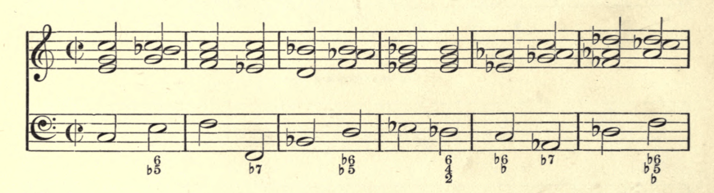
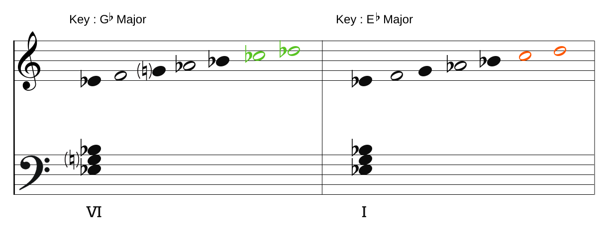
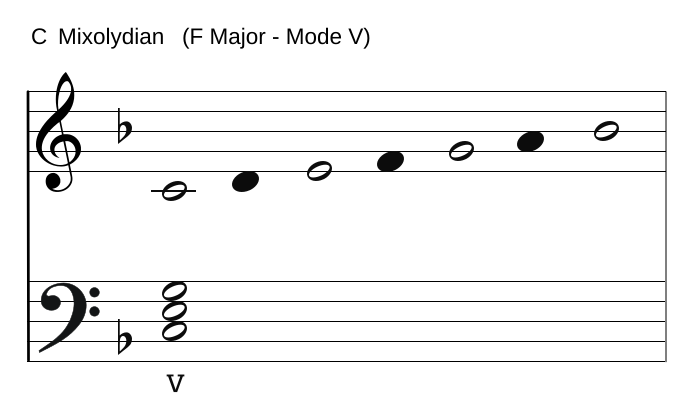
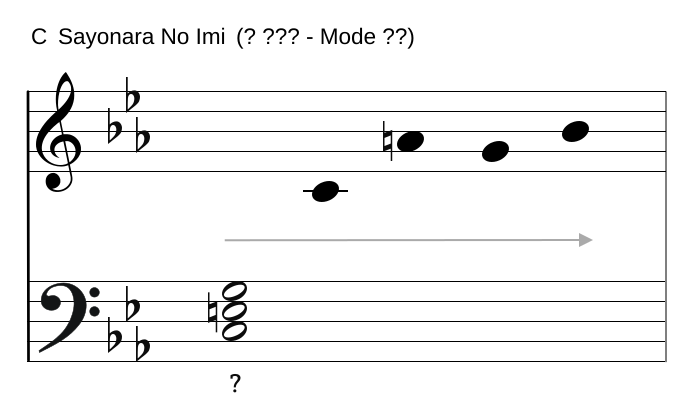

1. 多义性（Polysemy）
1. 多义性（Polysemy）
在来到这第VIII章之前，“对某个和弦可以有多种解读”、“某个和弦可以具备多重含义”这样的场景已经出现过无数次了。
关注和弦意义的重叠与不确定性并致力于将其理论化的大家，首推德国音乐理论家格奥尔格·约瑟夫·福格勒（Georg Joseph Vogler，1749 – 1814）。福格勒正是将这种“和弦内部蕴含的多重意义”称为**多义性（Mehrdeutigkeit）**的人[1]。
 (1802) Georg Joseph Vogler “Handbuch zur Harmonielehre”
(1802) Georg Joseph Vogler “Handbuch zur Harmonielehre”
在关于里曼的历史故事中我们也曾简要提及，福格勒正是奠定罗马数字级数记谱法基石的先驱。罗马数字记法普及到被视为通常标准的程度，是在他去世很久之后，由继承其志向的戈特弗里德·韦伯与西蒙·塞希特等人一步步推广开来的。

1868 Principles of Harmony – F. A. GORE OUSELEY这是福格勒去世约50年后的理论书。这本是利用 I7 接连向下属调转调的讲解，但在第二个和弦处仅以“♭5 6”单纯标注度数的堆叠，由于没有级数标记，究竟发生了什么让人极难看清。
福格勒作为在黎明期挺身而出“必须改变这种局面”的关键人物，我们今天的学习者也深受其惠。
将 Mehrdeutigkeit 英译
在这篇文章中，我们将正式探讨这个“Mehrdeutigkeit”；但鉴于德语词较长且不易阅读，我们在此采用音乐学博士达娜·古利（Dana Andrew Gooley）所使用的英译——多义性（Polysemy）[2]。 这个词在中文里与“多义性”基本同义。同样地，在表达“具有多重意义的/多义的”这一形容词时，我们一贯使用**多义的（Polysemic）**一词。
多义性 (Polysemy) : 某个和弦处于能够具备多重意义的状态的性质。 : “多义”的反义词是“单义”、“一义”等。在英语中为 Monosemy、Monosemic。
在上一篇文章的结尾，我们提出了：“从音响论走向认知论，从结构论走向意义论”。理解了多义性的价值观，视野所及的世界又将焕然一新。
2. 从“单义性”的桎梏中解放
在深入多义性理论之前，我们需要自觉意识到：平时的我们是多么容易偏向于单义性（Monosemy）的视角，并需要主动从中解脱出来。
演奏与单义性
例如将理论运用于“演奏”时——即在乐曲骨架已有一定固定的状态下在其上附加即兴演奏时，理论是被用来将音乐单义化的。

如果不知道背景音阶就无法进行即兴演奏，因此模糊不清是不行的。比起 C 标明为 CΔ7，比起 CΔ7 标明为 C Ionian——越是详细具体地描述，越能正确地认知音乐。单义性的价值观始终潜藏在底层。
分析理论与单义性
而在对乐曲进行“分析”时，同样是以将音乐确定为单义状态为最终目标的。

辨别异名同音（等音）、判定包含省略根音在内的真正根音……通过这些手段，试图揭示作曲家究竟是出于何种意图使用该和弦的单义性诉求，同样是大家所追求的。无论出现什么和弦，能够断言“这就是某某和弦！”的人会被视为高手。这种单义性的价值观深深植根于心。
无论是演奏还是分析，“正体不明/身份不详”都是“不受欢迎的不速之客”。毫不夸张地说，音乐理论一路以来的努力正是为了消灭这种不确定性。如果用一句“无所谓怎样都行”敷衍过去，就会被视作思考停滞和放弃探索。
作曲与单义性
然而，一旦我们自己站到了作曲者的立场上，情况就完全不同了。固然，理解自己创作的声音所蕴含的意义是必要的，且单义明确的音乐对听众而言也更容易理解。然而，“故意不使之单义化”始终是一个常备的战术选项。例如特意不弹奏对识别和弦至关重要的三音或七音、故意不采用规整的三度叠置结构等，各种各样的方法都可以成为创作策略。

如果此时被“演奏”或“分析”的心态所绑架，就会理所当然地“从和弦名称出发”、“从音阶出发”去构思展开，这些特殊的战术选项就有被束之高阁的危险。 对音乐的多义性不应只是模糊感知，而是通过理论化的严谨梳理：演奏到何种程度听众会把意义锁定到何种地步？如何才能让多重语境巧妙合流？在心中有数的前提下进行自如掌控。善用这种能力，便能流畅地引出在通常的单义思维下难以企及的离经叛道的惊艳表现。
因此，让我们暂且抛开以往那种“仔细分析、准确辨别声音意义”的“模范优等生”姿态，尝试以“如何才能做出不被他人轻易识别的和弦”这种180度反向的视角来活用音乐理论——这就是我们接下来要展开的多义性理论。

例如在编剧叙事的世界里，“人物究竟是生是死未明”、“究竟是梦境还是现实未作交代”这类手法，本就是理所当然被视作经典套路之一的。因为大家都明白：有时*“故意”留下解读的余地能够极大地激发受众的想象力，赋予故事更深层次的意蕴*。 创作者不是凭空凭感觉，而是将其作为一套“理论模式”来掌握的。为了不让解读收拢为单一答案，存在着缜密的伏笔铺设和精细的情感刻画：怎样表现会偏向其中一种解读，所以必须把握好这个分寸。那么在音乐中，也完全可以做到同样的事。
严密单义性的彼岸
在思考多义性时，以往培养出来的“辨别音乐的能力”绝不会白费。相反，这种辨别能力正是驾驭多义性的关键所在。试想，如果一个人未能在理论上掌握上一节所讲的“减四度”与“增六度”的存在，即便凭感觉把减四度当作减四度来用，恐怕也绝不可能产生“将其偷梁换柱成大三度”的构想。辨别能力越是细腻敏锐，能够闪现的“偷换”、“重叠叠加”的模式就越丰富多样。
关于术语介绍的说明
从这里进入正题，但正如旋律理论与元音乐理论一样，本文将设定许多新术语。为加以区分：文中写作“称之为……”的均为本文原创提出的词汇；写作“被称为……”的则是前人理论书籍或论文中已经存在的词汇。
3. 结构与语境
为了掌控多义性，首先必须牢牢把握处于多义状态的和弦是如何逐步收敛为单义状态的这一过程。用于辨别和弦意义的线索要素有许多，具代表性的包括以下几项：
- ① 结构信息 与该和弦一同使用的音及其倾向分布、音符配置、低音声部究竟是什么等。
- ② 前向语境（Prior Context） 在此之前形成的调性，以及与前一个和弦的声部连接。
- ③ 后向语境（Subsequent Context） 在此之后形成的调性，以及与后一个和弦的声部连接。
- ④ 时间语境（Temporal Context） 和弦在节奏脉络中所处的位置、持续的时长等。
- ⑤ 文化语境（Cultural Context） 由风格流派、历史时代、乐器特性、编制特性等所产生的信息。
简而言之，①是和弦发声那一瞬间脱离具体语境的固有信息。不仅是响起了哪些音，包括长度、音高、声部排列等全部信息都是识别和弦的线索[3]。
②与③是前后文，④是涵盖前后的时间排布，⑤则是超越声响本身的宏观语境。由于在此深入讨论④和⑤收获有限，因此①～③将作为讨论的核心。在通常的流行音乐中，乐曲开始两三小节之后，根据所用的音符与旋律线条就会确立调性，此后便能充分依据这一语境进行识别。一旦进入该状态，即使①结构信息有所缺失，根据此前建立起来的调性，大致也能准确识别。
反过来说，一旦插入了调外和弦（Non-Diatonic Chord），此前辛辛苦苦建立的调性便开始动摇，多义性的大门由此敞开。当调外音出现时，听众第一反应会联想到怎样的语境环境因人而异（例如出现 IVm 时，究竟会联想到 IVmΔ7 还是 IVm7 等）。
4. 枢纽和弦的多义性
在加深对多义性的理解时，最理想的题材莫过于“枢纽和弦（Pivot Chord）”。因为这是所有人都极易理解、在日常音乐中频繁发生的“意义重叠”的典型场景。

这是皮卡第终止的 VI 级兼任转调目的地 I 级的典型枢纽范例。枢纽和弦正是建立在“前向语境与后向语境所带来的两种截然不同的诠释共存”这样一种二律背反之上的[4]。
然而，这种意义重叠的方式各有千秋：有强烈保留前方语境的类型，有一头扎向后方语境的类型，也有徐徐过渡的类型……通过对这些细节的具体观察，我们能够深入理解意义究竟是如何产生模糊、其多义性又是如何逐步收敛的。
共同音与特定音
学完第VI章的我们深知，音阶对调性的确立有着决定性的影响。不仅是奇数度音，中间空隙的2、4、6级音如何填充，所提示的调性截然不同。在上述《我的吉他》（僕のギター）一例中，和弦是普通三和弦，旋律是根音，除了1、3、5级音之外的信息完全没有揭示。
“G♭大调的皮卡第终止”与“E♭大调的主和弦”，实际上两者的第6、7级音是截然不同的。本例可以说正是通过避而不谈这些音，从而保持了中立的典型模式。


此时共同拥有的1～5级音，有时被称为“枢纽音（Pivot Note）”，或简称为共同音（Common Tone）。枢纽和弦归根结底就是从转调前后音阶所共有的枢纽音中遴选音符构建出来的和弦。
另一方面，在多义性理论中，平时不引人注目的“非共有”音反而扮演着更关键的角色，我们称之为各自音阶的特定音（Eigentone）。由于调外音的登场所引发的多义性，正是通过运用特定音而被逐步收窄筛选，最终达到和弦意义完全可被识别的状态。
特定音 (Eigentone) : 当和弦的含义存在多种可能时，在提示该含义的候选音阶中仅有某一个音阶所独具、因而能用来锁定该特定含义的音符。 : 例如当语境候选有3个时，能够将其范围缩小至2个的音符，也包含在广义的“特定音”之中。 : 对于“虽然共有但异名同音拼写不同”的音，无论演奏多少次都无法锁定具体语境，因此不计入“特定音”，而是作为“共同音中的特殊存在”处理。
弹奏特定音是一种主动促使意义确定的行为；反之，如果不弹奏特定音，意义处于不确定的时间就会相应延续。
实时听觉认知的动态变化
即便是这样初级的皮卡第终止转调，在认知层面上也发生着非常耐人寻味的变化。
E♭ B♭ Cm A♭
这是副歌开头的4个小节，明确勾勒出了 E♭ 大调的 1-5-6-4；但若仅看前两个和弦，将其理解为 B♭ 大调的 4-1 也完全说得通。即使算上主旋律与背景配器，用于判断这两个调的核心分水岭音符 A/A♭ 均未响起，因此这种可能性在理论上依然存在。
E♭ B♭ D7(-9) Gm
像这样，取决于第3-4小节的发展，走向 B♭ 调的未来也是完全可能的。然而实际聆听该作品时，几乎不会有听众会联想到这样的展开。早在各个调的特定音 A/A♭ 出现之前，我们便已经在内心判定它是 E♭ 调了。这是为什么呢？
语境的惯性
其实道理并不深奥。E♭ 和弦在转调前的调中是 VI 级，具有主功能属性。因此在没有特殊提示的情况下，这个 E♭ 首先会被认知为主和弦系和弦。接上 E♭-B♭，听起来第一印象就是 T–D。 再加上在转调前的 G♭ 大调中，A 音带有降号（A♭）。因此只要没有明确提示降号已被还原，人们就更容易联想起包含 A♭ 音的调性环境。
换言之：只要没有出现反向的明确提示，人类倾向于继承沿用此前的语境。打个比方，音乐中同样存在着一种“惯性”。这种“惯性”的存在，在后续探讨高阶多义性时将发挥决定性作用[5]。
树立“实时性”意识
由此我们还能明确另一件事。虽然显而易见，但当调外和弦响起的瞬间听众感受如何，取决于“前向语境”而非“后向语境” [6]。
当我们进行“分析”时，往往是从容地审视后续的三四个小节，然后盖棺定论：“好的，是 E♭ 大调”。但多义性关注的不是这种事后诸葛亮，而是听众在时间流逝中实时感知到的听觉认知体验。
想定・判定・确定
为了准确讨论这种听觉认知的变化，我们将概念词汇进行明确规范：某个和弦进入的瞬间萌生某种含义预期的阶段称为“想定（Assumption）”；随后获得了一定程度的信息、明确认知到特定含义的阶段称为“判定（Judgment）”；声音结构以实际声响明确展现、其他可能性（几乎）被完全排除的阶段称为“确定（Determination）”。
对于“想定”，第1想定、第2想定……可能同时产生；而在随后的“判定”与“确定”中，则表现为从中筛选出唯一确定的状态。

不懂乐理的人虽然无法用语言如此条分缕析地认知，但凭借调性图式能够感性地认知调性的变化。然而他们理所当然无法察觉自己的“判定”其实尚未真正“确定”。
作为创作者，我们既可以引导听众走向正确的判定，也可以故意将听众诱导向错误的判定，随后施加出其不意的反转背叛。前者对听众而言亲切自然，后者则重在冲击力，虽然也伴随着可能听起来怪异违和的冒险风险。当然，还有一种手法是刻意规避前向语境或特定音带来的判定，维持悬疑感。
Check Point
当带有丰富多义性的和弦出现时，听众会结合“前向语境”与“时间语境”进行“想定”。随着新信息的注入，候选范围被收窄，听众会做出某种“判定”。这种判定往往在声音真正落地“确定”之前，借助语境的力量便已提前完成。正因如此，背叛这种判定在创作上是完全可行的。
创作者能够高度自由地掌控：让听众产生何种“想定”、在何种时机做出何种“判定”、在何时予以“确定”；不仅能够做到“不让其确定”，甚至能够做到“不让其做出判定”，在更复杂的现代音乐中，甚至能做到连“想定”都无从产生。
5. 判定的诱导
虽然我们的最终目标是创造出让听众无法轻易判定的复杂和弦、或是发掘背叛判定偷梁换柱的高阶技法，但我们不妨先把基础打得更扎实一些。 只有摸透了“如何细致周到地引导听众”，背叛的手法才会浮出水面。因此我们先来观察在实际乐曲中是如何进行细致引导的。

这也是我们在第IV章中分析过的曲目（乃木坂46《再见的意义》）。通过将原调的 VI 级“重新视作”新调的 V 级，实现向上转调。
这首歌曲与刚才不同，是一次 S 功能转调。如果只是普通地弹奏和弦，听众很难清晰地预料到接下来会走向 F 大调和弦。作为一首流行金曲，必须有明确的向导带领听众，才能让大众容易理解。因此，在 C 和弦发响的4拍之中，运用了巧妙暗示转入目标音阶的旋律技巧 [7]。

让我们再次细致审视这段旋律是如何对 C 这个和弦的多义性进行层层过滤筛选的。
C 大三和弦的多义性
在 C 大调中出现 C 大三和弦它不过是普通的主和弦；但作为调外和弦出现时，它究竟能充当哪个调的几级和弦，存在着极多的可能性。

上图列举了围绕 C 大三和弦可能产生的代表性调性环境。本例中基于前向语境，最初是作为“E♭ 调的 VI 级”起步的，但在进入下一个和弦之前，通过演奏某种语境的特定音，便能暗示目标方向的变更。
仔细观察《再见的意义》的旋律线，会发现在进入下一小节的 F 和弦之前，多义性的可能性分成了两个阶段被逐一消除：
首先在唱到“サヨ（Sa-yo）”的“ヨ”时唱出了 A 音，这不仅表明“脱离 E♭ 调”，同时还蕴含了“并没有打算走向 A♭ 调”的明确提示。

退一步说，在这个场景下，原本完全可以将 VI 视作 III 级从而以 A♭ 调为目标展开转调：
像这样通过抛出 La♭、Si♭、Re♭，也能顺理成章地将航向打向下属调方向。但“サヨナラ”的“ヨ”明确告诉听众：并不是这条路线。
紧接着唱到“ラ（ra）”时给出了 B♭ 音。由此，所有升号系的调性被全盘排除。语境至此被（几乎）完全确定，所有人都自然而然地预见到了走向 F 大调的未来。

实际上，即便不做到如此面面俱到，也能完成足够自然的转调。然而通过如此周密清晰的向导铺设，使得紧随其后的 F 和弦能够毫不含糊地作为无可争议的主和弦深入人心，这种设计是非常值得赞叹的。
树立实时性意识
因为这一点极其重要，我们必须再次强调：看后续语境，转入 F 调对所有人而言都显而易见；C 是其中的枢纽，已经成为了 C Mixolydian，所以严格来说在此时就已经进入 F 调了……我们平时的“分析”，往往是在扫视了数个小节之后，仅对最终获得的**“结果”**进行汇报。


然而，听众在聆听那段音乐时所经历的真实体验，本质上截然不同。在 C 响起的瞬间，听众被抛入了纯白一片的多义性迷雾之中；随后在每一个音符的指引下，一点一滴地勾勒出 F 大调的轮廓——这里存在着一个扣人心弦的**“过程”**。


而音乐作为一门时间艺术与听觉艺术的深邃魅力，恰恰蕴含在这一过程之中。这次探讨的还只是“引伸音（Tension）在后文被逐步揭示”的基础模式；如果后文被揭晓的不是引伸音，而是“导向音（Guide Tone）”或“等音拼写”，其趣味又将大不相同，这正是我们在后续文章中将要探讨的。
我们现在所做的，是主动潜入和弦理论的“死角”。跳脱出以追求单义性为执念的传统理论藩篱，分析的不再是结构已经判明的部分，而是未被判明的部分；不再是结合后向语境的离线宏观解释，而是分析实时流淌的听觉认知变迁…… 在连接系理论中，通过大胆聚焦于传统禁则，我们获得了巨大的创作自由。多义性理论在本质上也是相通的：故意瞄准传统理论因棘手而敬而远之的盲区，从而开拓出全新的音响表达。
虽然已经初现端倪，但在思考多义性时，思维的流动方向是相反的。本节正是为此所做的热身准备。
总结
- 和弦的含义存在多种可能性的状态被称为多义性（Polysemy）。
- 当结构信息与语境充分给出时，和弦的含义被收拢为唯一确定，这种状态称为单义性（Monosemy）。
- 枢纽和弦能够从前后两端进行不同的解读，随着“特定音”的出现方式，能够收窄语境或调节调性强度。
- 将和弦的识别过程划分为“想定”、“判定”、“确定”三个阶段更便于讨论，创作者既能引导听众做出正确判定，也能对其判定施加反转背叛。